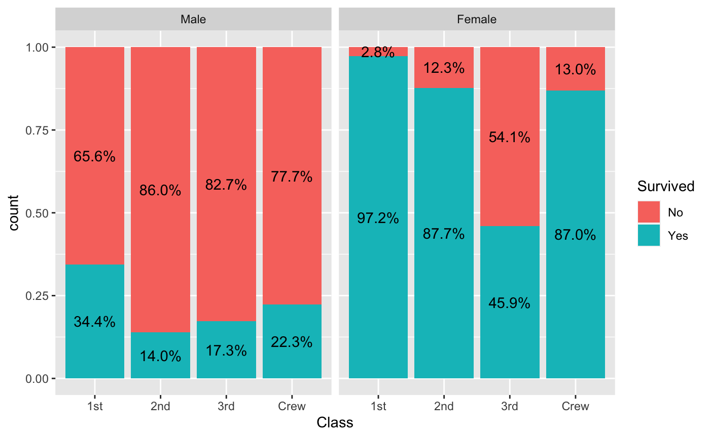
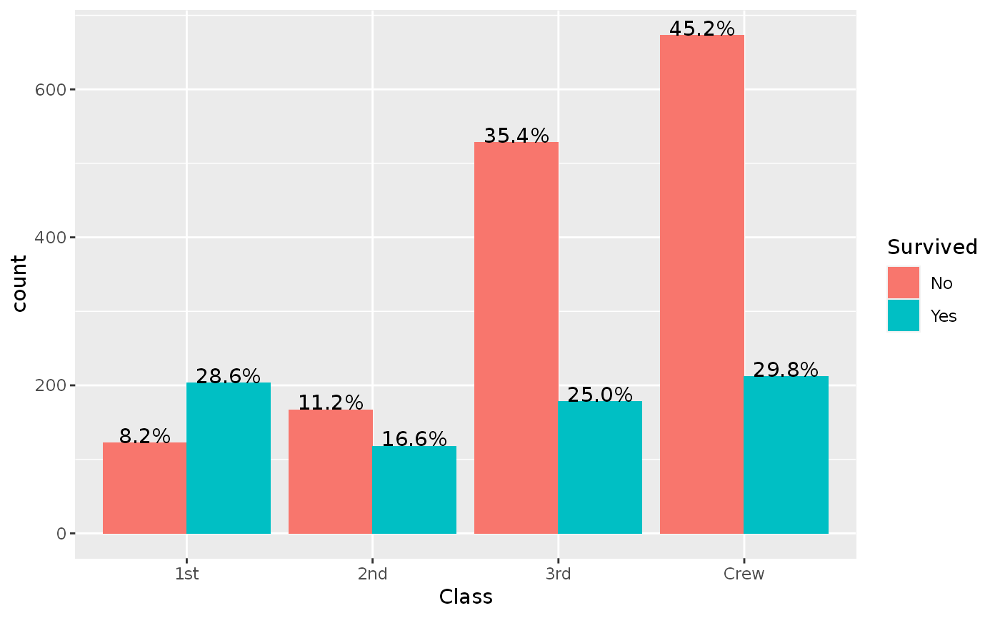
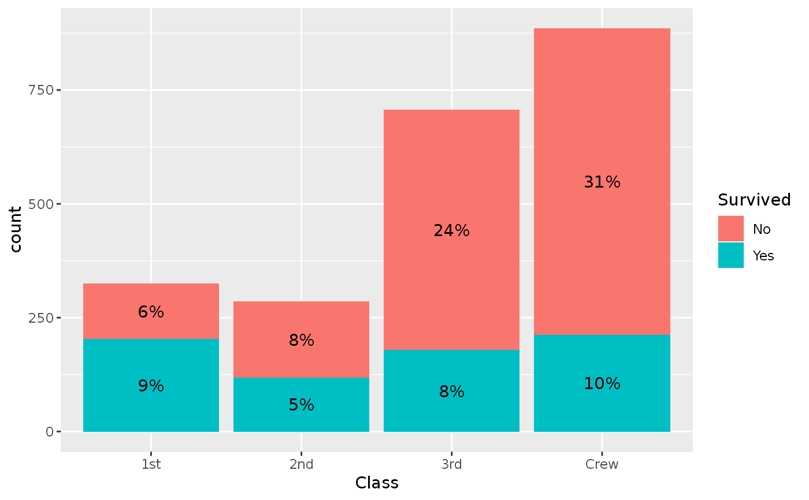

stat_prop is a variation of ggplot2::stat_count() allowing to compute custom
proportions according to the by aesthetic defining the denominator
(i.e. all proportions for a same value of by will sum to 1).
The by aesthetic should be a factor.
stat_prop( mapping = NULL, data = NULL, geom = "bar", position = "fill", ..., width = NULL, na.rm = FALSE, orientation = NA, show.legend = NA, inherit.aes = TRUE )
Arguments
| mapping | Set of aesthetic mappings created by |
|---|---|
| data | The data to be displayed in this layer. There are three options: If A A |
| geom | Override the default connection between |
| position | Position adjustment, either as a string, or the result of a call to a position adjustment function. |
| ... | Other arguments passed on to |
| width | Bar width. By default, set to 90% of the resolution of the data. |
| na.rm | If |
| orientation | The orientation of the layer. The default ( |
| show.legend | logical. Should this layer be included in the legends?
|
| inherit.aes | If |
Aesthetics
stat_prop() understands the following aesthetics (required aesthetics are in bold):
x or y
by (this aesthetic should be a factor)
group
weight
Computed variables
- count
number of points in bin
- prop
computed proportion
See also
Author
Joseph Larmarange
Examples
# Small function to display plots only if it's interactive p_ <- GGally::print_if_interactive d <- as.data.frame(Titanic) p <- ggplot(d) + aes(x = Class, fill = Survived, weight = Freq, by = Class) + geom_bar(position = "fill") + geom_text(stat = "prop", position = position_fill(.5)) p_(p)p_(ggplot(d) + aes(x = Class, fill = Survived, weight = Freq) + geom_bar(position = "dodge") + geom_text( aes(by = Survived), stat = "prop", position = position_dodge(0.9), vjust = "bottom" ))p_(ggplot(d) + aes(x = Class, fill = Survived, weight = Freq, by = 1) + geom_bar() + geom_text( aes(label = scales::percent(after_stat(prop), accuracy = 1)), stat = "prop", position = position_stack(.5) ))